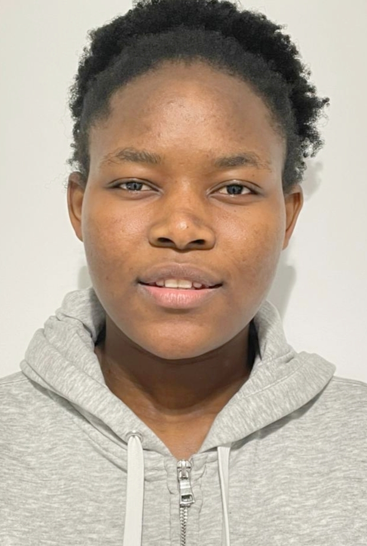

Mylaine Jovanie MWOUANTCHEU FANKAM

Etudiante en deuxieme année de formation d'ingenieur en instrumentation systèmes embarques & genie biomedical
INFORMATIONS PERSONELLES
- MWOUANTCHEU FANKAM
- Mylaine Jovanie
- 20ans
- jovaniefankam@gmail.com
PARCOURS ACADEMIQUE
- Depuis 2020 : Instrumentation Systemes embarques et genie biomedical; Villetaneuse - France
- 2017 - 2020 : Bachelor en ingenierie Biomedicale; Douala - Cameroun
EXPERIENCES PROFFESIONNELLES
Juillet 2021- Septembre 2021 : stage ouvrier chez CLINEA
Juillet 2018- Aout 2018 : stage decouverte d'entreprise
PROJETS REALISES
Projet 3A: Conception et realisation d'un kit de diagnostic quantitatif rapide du paludisme
Itineraire metro : Programme permettant de trouver un chemin permettant de quitter d'un point A à un point B et en un temps minimal
Moteur pas à pas : Afficher la vitesse de rotation dans le sens horaire ou anti-horaire d'un moteur pas à pas sur un écran LCD à l'aide d'un microcontroleur
Projet 2A: Conception d'une maquette illustrant le principe de fonctionnement d'un tensiometre electronique
COMPETENCES
CATIA et SOLIDWORKS :Realisation des dessins 3D
Langage C: Connaissances de base
Matlab/Octave: Pour le traitement du signal
Realisation des mini projets à l'aide d'un microcontroleur (ecrire sur un LCD, faire un convertisseur electronique analogigue,...)
Habilitation salle blanche
LANGUES
- Francais: langue maternelle
- Anglais : B2
- Italien : A2